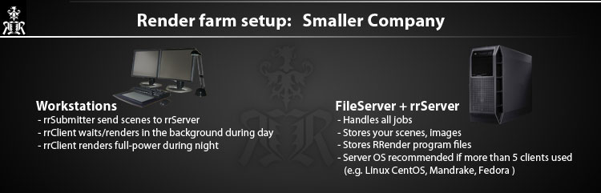
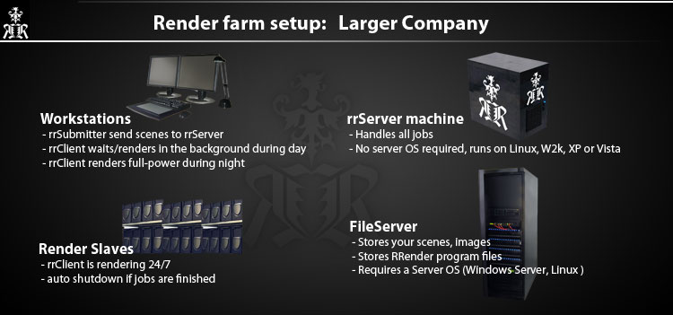
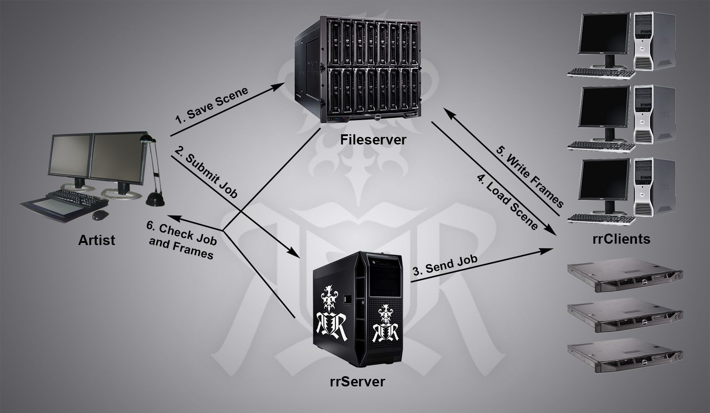

Hardware Requirements
Basic requirements for network rendering
- Fileserver/NAS for project data:
If you want to render on multiple machine, then you have do work on a fileserver. All project data (scene files, textures, output images) has to be saved on the fileserver.
You can NOT use any files that are on your local harddrive. Because the other machines do not have these files on their local drive. (Exception: You work/access your local drive via a network share name)
Note Microsoft Windows Limitation: You cannot use Windows XP/Vista/7 for a fileserver if you are using more than 4 clients. You have to use at least Microsoft Server foundation (which is not much more expensive than win7)
For Royal Render you need
- rrServer machine:
1 Windows or Linux machine for the rrServer (win XP, Win 2k, Win server).
OS: Windows (2k, XP, 7, Server...) or Linux (CentOS, Fedora, Mandrake...)
Ram: 1GB+ CPU: 2,5 Ghz single core, dual core recommended (as the server is multi-threaded)
Can be the fileserver
- Fileserver/NAS for the RR applications:
1 fileserver which holds all RRender application files.
It can be the same as the rrServer server and/or the same as the project fileserver.
You require a network share (or directory on an existing share), which is accessable by everyone. This folder has all client and submitter executables and all config files.


How does it work
- Save Scene:
The artist has created a scene file. The scene file with all textures and source files is saved on the fileserver.
The data has to be on a fileserver as all machines need to access the files.
E.g. the folder C:\MySceneData is not located on each machine.
- Submit Job:
The artist starts the rrSubmitter via a plugin in the menu in the 3D/comp application.
The plugin will read all required information from the scene and sends it to the rrServer.
- Send Job:
The rrServer sends frames of each job to rrClients. The rrClients are either workstations or pure render farm machines.
- Load Scene:
The rrClient starts the 3D/comp application and loads the scene file from the fileserver.
- Write Frames:
The rrClient renders the frame numbers it has got from the rrServer.
Then it checks the frames and writes them to the fileserver.
- Check Job and Frames:
The artist checks the progress of the job via RR.
And the artist checks the rendered frames either via RR or loads them directly from the fileserver.
